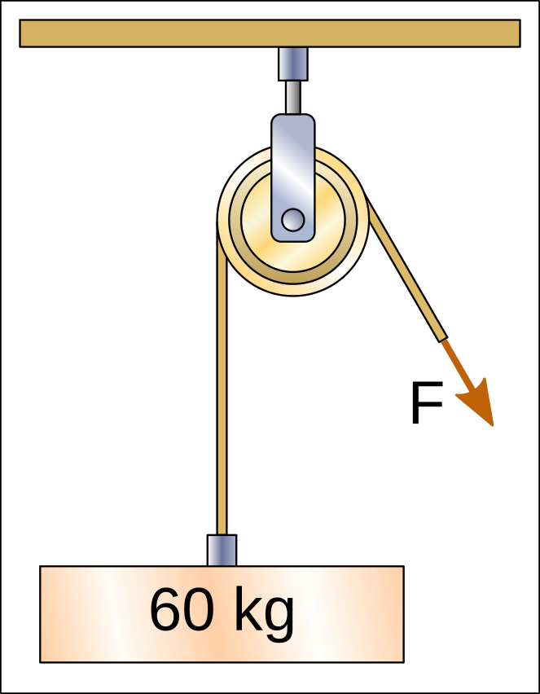
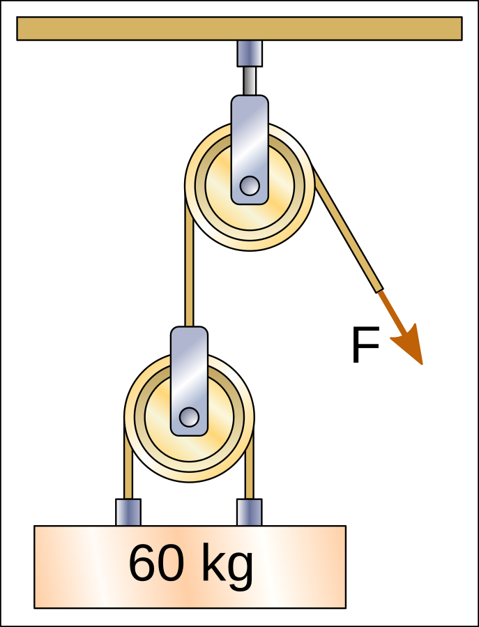
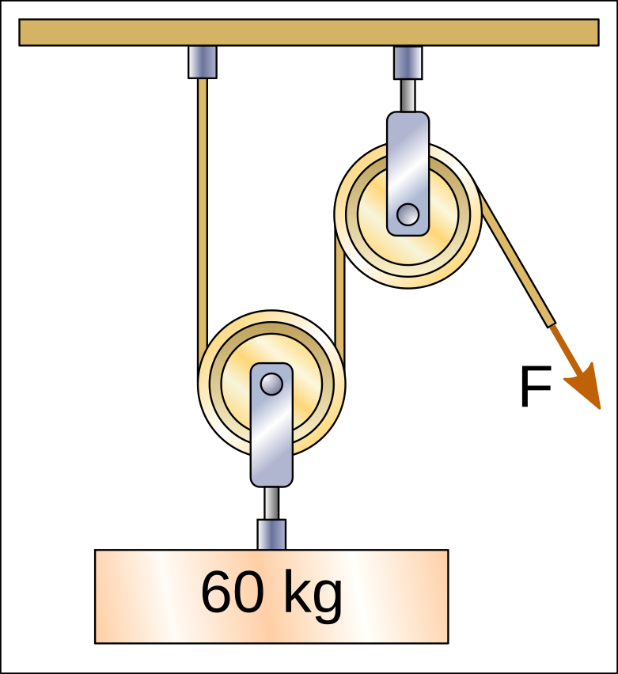
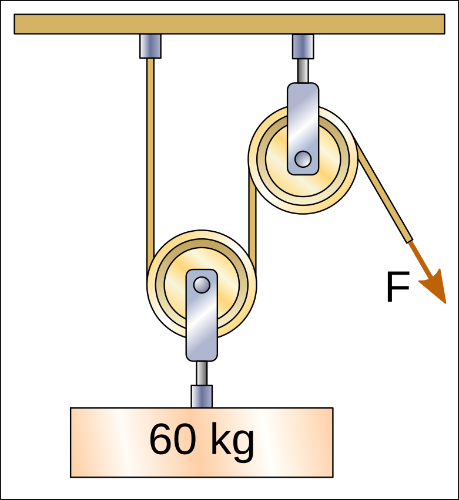
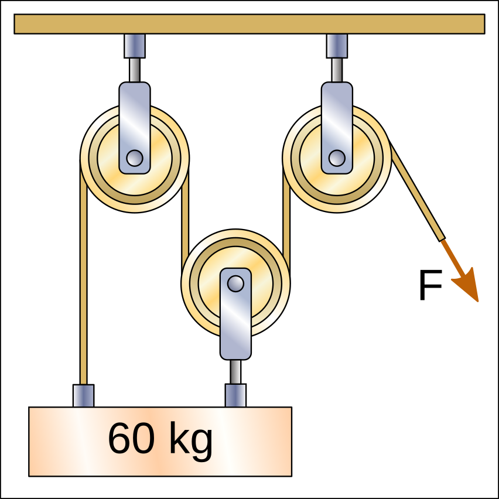
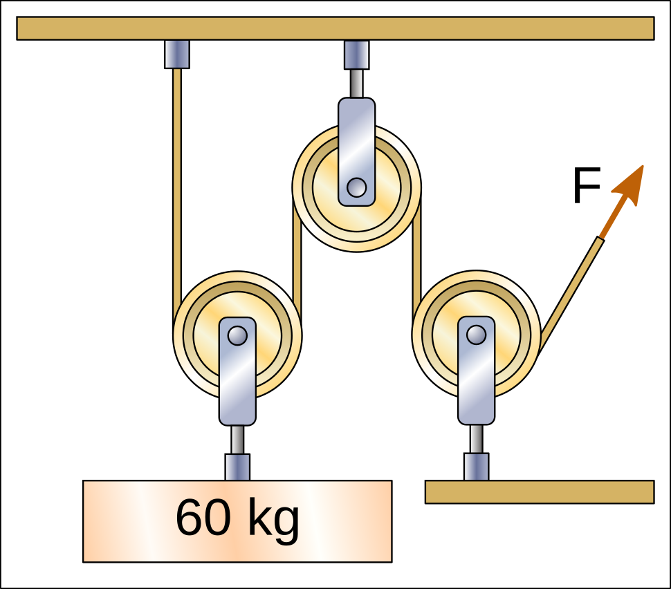

Poleas¶
Una polea es una máquina simple compuesta de una rueda acanalada por la que pasa una cuerda. La función de la polea es desviar la dirección y la posición de la cuerda y por lo tanto de la fuerza aplicada. De esta manera la cuerda de un pozo puede levantar un cubo de agua haciendo fuerza hacia abajo lejos del brocal, lo que significa una ventaja al poder tirar desde una posición más cómoda.
 {kind=link}
{kind=link}
Una cortina puede moverse hacia un lado y al otro gracias a una cuerda de la que tiramos hacia abajo a nivel del suelo. La función de las poleas aquí es mover la fuerza desde el suelo hasta una posición elevada y de lado a lado.

En todos los casos anteriores las poleas desvían la dirección y la posición de la fuerza, pero no reducen la fuerza necesaria para levantar el peso. Por lo tanto todas estas poleas necesitan que se estire el extremo de la cuerda con una fuerza de 60kgf (60 kilogramos-fuerza) para poder levantar los pesos.
Polipastos¶
Uniendo varias poleas se puede formar un polipasto, que levantará pesos con ventaja mecánica, es decir que podrá levantar más peso que la fuerza aplicada sobre la cuerda.
Para calcular fuerza necesaria para levantar el peso, hay que dividir el peso entre el número de tramos de cuerda que están tirando del peso hacia arriba.
En los siguientes polipastos hay 2 tramos de cuerda que tiran del peso hacia arriba y por lo tanto la fuerza que hay que realizar para levantar el peso será la mitad, es decir 30kgf.
 

{kind=link}
En los siguientes polipastos hay 3 tramos de cuerda que tiran del peso hacia arriba y por lo tanto la fuerza que hay que realizar para levantar el peso será un tercio, es decir 20kgf.
{kind=link}

En los siguientes polipastos hay 4 tramos de cuerda que tiran del peso hacia arriba y por lo tanto la fuerza que hay que realizar para levantar el peso será una cuarta parte, es decir 15kgf.


Hay que tener en cuenta que a veces las poleas de abajo no están enganchadas al peso y por lo tanto no cuentan a la hora de calcular la fuerza con la que hay que tirar de la cuerda.
En este polipasto hay 2 tramos de cuerda que tiran del peso hacia arriba y por lo tanto la fuerza que hay que realizar para levantar el peso será la mitad, es decir 30kgf.
{kind=link}
En este polipasto hay 3 tramos de cuerda que tiran del peso hacia arriba y por lo tanto la fuerza que hay que realizar para levantar el peso será un tercio, es decir 20kgf.

Polipastos anidados¶
Un polipasto puede tirar de la cuerda de otro polipasto y en ese caso nos encontramos con un polipasto anidado. Cada uno de los polipastos divide la fuerza que hay que realizar sobre la cuerda.
En el siguiente polipasto, la polea de abajo divide entre dos tramos de cuerda el peso de 60kg, por lo que la primera cuerda tendrá una tensión de solo 30kgf.
La polea de arriba vuelve a dividir entre dos tramos de cuerda la fuerza de la primera cuerda, por lo que la tensión será de 15kgf. Esta será la fuerza F que hay que realizar para subir el peso.

Ejercicios¶
Ejercicios de poleas y polipastos para calcular la fuerza con la que debemos tirar de la cuerda para levantar un peso.